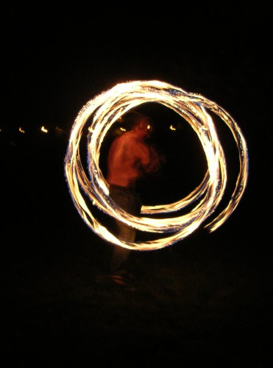
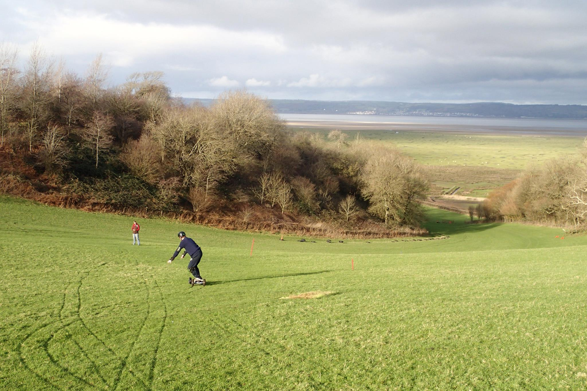
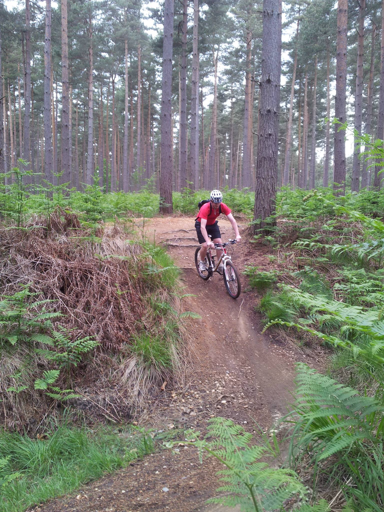
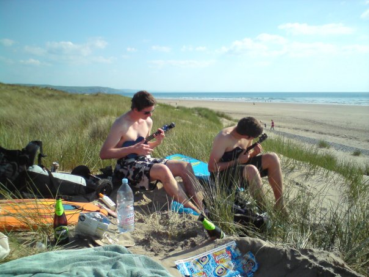

First published on the 1st of July 2016
Inspitred by the 30 Technologies in 30 Days Challenge I decided to do my own. I don't have a month to dedicate to this full time, and thinking about the long term I've decided to learn one new technology, every month, for a year.
The tech industry, especially in web development, moves really fast. It can sometimes be hard to keep up to date, and catching up is always harder than keeping current. It's also good to keep learning so you are able to keep learning in the future. Much like anything, learning new things is a skill, and like all skills, it can be improved on through practice. So I have decided to set myself this challenge.
I enjoy trying new things which has lead to a long string of weird and wonderful skills. For a long time I tried to learn one (big) thing every year. Thanks to that I can now play the Ukulele and played in a pub weekly, juggle, swing fire poi, use a diablo and devil sticks. I've run a couple of half marathons, I played squash for a year, learned to mountain board, kite board and longboard. I enjoy mountain biking, power kiting, skiing, kayaking and fishing. Many of these things I haven't done for a long time (there just isn't enough time for everything), but others I continue to enjoy.
It might seem like I'm a jack of all trades, but I think I think I'm a master of picking things up. People think I'm naturlly good at things, but the point I'm trying to make is that in fact it's the complete opposite. I have worked really hard to get to this stage where I can pick things up. And to keep this skill fresh I'm going to try and perfect something (or as close as I can get) this year rather than start something new from scratch. I considered waiting until January but there's no time like the present so I'm starting now. Assuming 3 hours a week, by the end I will have gained 156 hours practice in learning new things on top of what I already have and 156 hours practice of web development. If you subscribe to Malcolm Gladwells 10,000 hours rule, I should be an expert in 64 years from now (assuming that's the only development practice I have a week). If you prefer the underlying research by Anders Ericsson, then this is a vital part of the whole learning experience.
I'm not sure rules is a good word for this, perhaps the aims, or motivations might be better. The plan is to learn 52 technologies, one a week, every week until this time last year. I'm going to focus on web technologies, they need to be ones I have not directly used before. By that I mean, thinks that have been part of a project I have worked on are okay. Things where I have configured, edited or interacted with are not. And the biggest motivation is I'm going to write about them, just to make sure the panic monkey keeps me on target.
Challenges like these are nothing new. Why not set yourself a challenge and let me know how it goes.